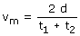
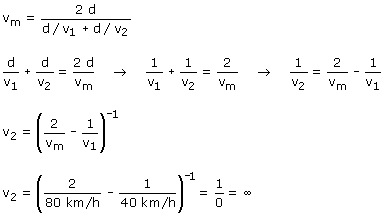

|
La velocidad media en el recorrido de ida y vuelta será:  d es la distancia entre las dos ciudades, t1 y t2 son los respectivos tiempos de ida y de vuelta. El tiempo de ida se puede poner como t1 = d / v1 (Siendo v1 = 80 km/h) y el tiempo de vuelta se puede poner como t2 = d / v2, siendo v2 la velocidad que nos piden  Para hacer una media de 80 km/h tendría que hacer la vuelta a velocidad infinita... o sea, que no puede conseguirlo. Vamos a ver si te convenzo de la veracidad del resultado. Con una velocidad de 80 km/h se tardaría 2.5 h en recorrer los 200 km (Ida y vuelta). Si el recorrido de ida lo hace a 40 km/h tardará 2.5 h. En hacer la ida tarda tanto como debería tardar en hacer la ida más la vuelta, está claro que no puede recuperar
|